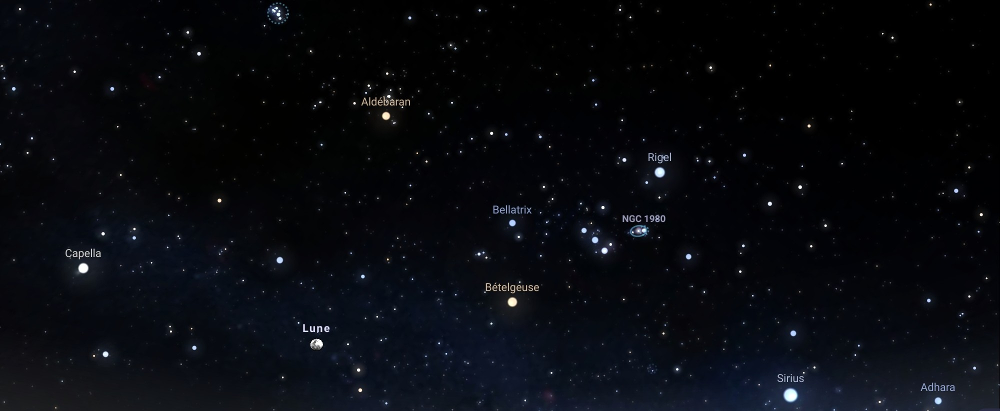

Recherche
-

- Achim NAPAME
- Accueil
- Recherche
- Conférence
- Enseignement
- Autres
- English
Pré-publications
-
Classification of log smooth toric del Pezzo pairs.
Version pdf.
Pré-publications.
Publications
-
Toric sheaves and flips, avec Andrew Clarke et Carl Tipler.
A paraître dans EPIGA, Journal. Pré-publications.
-
Toric sheaves, stability and fibrations, avec Carl Tipler.
Journal of Pure and Applied Algebra, Volume 228(3): 107494, 30 p. (2024), Journal. Pré-publications.
-
Stability of equivariant logarithmic tangent sheaves on toric varieties
of Picard rank two.
Annales de la Faculté des sciences de Toulouse : Mathématiques, Serie 6, Volume 33 (2024) no. 3, pp. 739-783, Journal. Pré-publications.
Mémoires
-
Faisceaux équivariants stables sur les variétés toriques.
Thèse de doctorat disponible sur Hal. Version pdf - Théorème de Newlander-Nirenberg, mémoire de master.